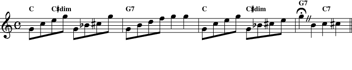

Next: Swing Up: Reference Manual Previous: Ornament
MMA has a rich set of commands to adjust and vary the timing of your song.
The tempo of a piece is set in Quarter Beats per Minute with the ``Tempo'' directive.
| Tempo 120 |
sets the tempo to 120 beats/minute. You can also use the tempo command to increase or decrease the current rate by including a leading ``+'', ``-'' or ``*'' in the rate. For example (assuming the current rate is 120):
| Tempo +10 |
will increase the current rate to 130 beats/minute.
The tempo can be changed series of beats, much like a ritardando or accelerando in real music. Assuming that a time signature of 4/4, the current tempo is 120, and there are 4 beats in a bar, the command:
| Tempo 100 1 |
will cause 4 tempo entries to be placed in the current bar (in the MIDI meta track). The start of the bar will be 115, the 2nd beat will be at 110, the 3rd at 105 and the last at 100. Note: the value of the macro $_TEMPO will reflect the final value, not the intermediates.
You can also vary an existing rate using a ``+'', ``-'' or ``*'' in the rate.
You can vary the tempo over more than one bar. For example:
| Tempo +20 5.5 |
tells MMA to increase the tempo by 20 beats per minute and to step the increase over the next five and a half bars. Assuming a start tempo of 100 and 4 beats/bar, the meta track will have a tempo settings of 101, 102, 103 ... 120. This will occur over 22 beats (5.5 bars * 4 beats) of music.
Using the multiplier is handy if you are switching to ``double time'':
| Tempo *2 |
and to return:
| Tempo *.5 |
Note that the ``+'', ``-'' or ``*'' sign must not be separated from the tempo value by any spaces. The value for TEMPO can be any value, but will be converted to integer for the final setting.
Before we go further with the TIME command: It really should be called Number Of Quarter Notes In A Bar, or something equally verbose.
MMA doesn't understand time signatures. It just cares about the number of quarter note beats in a bar. So, if you have a piece in 4/4 time you would use:
| Time 4 |
For 3/4 use:
| Time 3 |
TIME can accept fractional values. This can be useful if you have, for example, a piece in something like 5/8. You could always use TIME 5 and use 5 quarters/bar instead of 5 eights. But, if you used Time 2.5 you end up with MMA expecting 2.5 quarters, which is the same as 5 eights. This makes other programs expecting time signatures very happy.
For 6/8 it's easiest to use ``6''. You could use ``2'' or ``3'', but you do need to remember that this also sets the chord offset (used in chord data lines) defaults. So, if you set TIME 2 you would set chords (without using the extended ``@'' notation, here) on beats 1 and 2. If you use the recommended ``6'' you will also need to double your TEMPO setting since 6/8 is about eighth notes and MMA really likes quarters.
Changing the time also cancels all existing sequences. So, after a time directive you'll need to set up your sequences or load a new groove.
An optional setting for TIME is TABS. This option defines the chord position stops used when parsing a chord data line. Assuming a TIME 6 (for a 6/8 section) you would set chords with lines like:
|
Time 6
1 C / / G 2 C / / G7 |
In this case we are changing chords on beats 1 and 4. All those extra '/'s are a bit of a pain and distracting. As an alternative, try:
|
Time 6 Tabs=1,4
1 C G 2 C G7 |
The end result is the same, but with much less typing.
The TABS command requires a comma separated list of tab stops. The first stop must always be 1 and the last must be less or equal to the integer value of TIME.
As a convenience you can combine the setting of TIME, TIMESIG and TABS easily for common time signatures. Simply use a known time signature as the sole argument. For example, to set up for a waltz:
| Time 3/4 |
This will set the beats per bar to 3, the time signature meta event to ``3/4'' and the chord tabs to 1,2,3. The following table shows the known time signatures, etc.17.1.
| |||||||||||||||||||||||||||||||||||||||||||||||||||||||||
Many time signatures can have different meters. For example, in 6/8 you could have 6 or 2 beats/measure. In these cases we leave it to you to set the TABS to the correct values for your piece.
In addition to the above values, MMA also recognizes the special time signature ``Cut'' and ``Common''. They are internally translated to 2/2 and 4/4.
If the time signature you need isn't listed above you can set it in the following manner: Assuming 13/4:
| TimeSig 13/4 |
| Time 13 |
Important: The TIME, TABS and TIMESIG values are saved and restored with grooves! If, in your song, you set TIME 3 and then load a GROOVE created with a TIME 4 setting you will have 4 beats per bar. Not the 3 beats you are expecting. In most cases you do not want to use TIME in a song file ... leave it for libraries.
Even though MMA doesn't use Time Signatures, some MIDI sequencer and notation programs do recognize and use them. So, here's a command which will let you insert a Time Signature in your MIDI output:
| TimeSig NN/DD |
or (not recommended, use the ``/''):
| TimeSig NN DD |
The NN parameter is the time signature numerator (the number of beats per bar). In 3/4 you would set this to ``3''.
The DD parameter is the time signature denominator (the length of the note getting a single beat). In 3/4 you would set this to ``4''.
Note that the single slash character is optional.
The NN value must be an integer in the range of 1 to 126. The DD value must be one of 1, 2, 4, 8, 16, 32 or 64.
MMA assumes that all songs are in 4/4 and places that MIDI event at offset 0 in the Meta track.
The TIMESIG value is remembered by GROOVEs and is properly set when grooves are switched. You should probably have a time signature in any groove library files you create (the supplied files all do).
The common time signatures ``common'' and ``cut'' are supported. They are translated by MMA to 4/4 and 2/2.
Important: this command does not have any effect on internal timing in MMA . It only sets a Meta event in the generated MIDI file. You must set the time (beats per bar) with the TIME command.
It is not uncommon to find that the time signature in a song changes. Most often this is to generate a short (or long) bar in the middle of a phrase. This example shows a few bars of a popular song which changes from cut time to 2/4 as well as MMA code to generate the correct MIDI file.
| Mixed Time Notation | |
|
|
The TRUNCATE reduces the duration of the following bar to the specified number of beats. For example:
| Truncate 3 |
will create a bar 3 beats long.
TRUNCATE works by shortening the duration and deleting the pattern definitions in the unused section of the bar. Normally, the ending of the bar's pattern is the part skipped.
However, you can also force the segment of the current pattern which TRUNCATE uses with the SIDE option. For example, if you would like the next bar to have 2 beats and to use the second half of the pattern:
| Truncate 2 Side=Right |
You can even use the ``middle'' part of the pattern by using a value for the SIDE option:
| Truncate 1 Side=2 |
would force the next bar to have 1 beat using the pattern starting at offset 2 in the bar. To illustrate the above case, assume you have a CHORD sequence defined as:
| Chord Sequence 1 4 80; 2.5 8 90; 3 4 100; 4 8 100; |
The option SIDE=2 will convert the SEQUENCE to be:
| Chord Sequence 1.5 8 90; |
which will be used in the following bar.
The number of bars in which TRUNCATE is in effect is normally one (the next bar). However, you can change this with the COUNT= option. For example, you might want to create a sequence with different GROOVES:
|
Truncate 1 Count=4
Groove PopBallad C // 1 beat bar Groove PopHits / // second 1 beat bar Groove PopFill / // third 1 beat bar Groove PopBalladSus / // final 1 beat bar Groove PopBallad / // normal 4 beat bar |
You can specify both the number of beats and the SIDE as fractional values. This can be handy when your song is in a compound time. For example, the song `` Theme From Mahogany'' is in 4/4 time, but one bar is in 5/8 time. We have 4 beats in each bar, and don't really have an 8 beat time to use (we could, but it makes our input a bit more complicated), we simply convert the second time to 2.5/4 (not a legal time signature!). This is cleanly handled by the following snippet:
|
Truncate 2.5
Groove PianoBalladFill Timesig 5 8 C Timesig 4 4 |
The arguments for the SIDE option are:
A few caveats:
The example file egs/misc/truncate.mma shows some examples of this command.
Internally, MMA tracks its position in a song according to beats. For example, in a 4/4 piece the beat position is incremented by 4 beats after each bar is processed. For the most part, this works fine; however, there are some conditions when it would be nice to manually adjust the beat position:
Each problem will be dealt with in turn. In this example a pause is simulated at the end of bar 10. One problem with this logic is that the inserted beat will be silent, but certain notes (percussive things like piano) often will continue to sound (this is related to the decay of the note, not that MMA has not turned off the note). Frankly, this really doesn't work too well ... which is why the FERMATA (details here) was added.
| Adding Extra Beats | |
|
In this example the problem of the ``short bar'' is handled. In this example, the sheet music has the majority of the song in 4/4 time, but bar 4 is in 2/4. This could be handled by setting the TIME setting to 2 and creating some different patterns. Forcing silence on the last 2 beats and backing up the counter is a bit easier.
| Short Bar Adjustment | |
|
Note that the adjustment factor can be a partial beat. For example:
| BeatAdjust .5 |
will insert half of a beat between the current bars.
Finally in this example, the problem of overlapping bars is handled. We want to change the GROOVE in the middle of a bar. So, we create the third bar two times. The first one has a ``z!'' (silence) for beats 3 and 4; the second has ``z!'' for beats 1 and 2. This permits the two halves to overlap without conflict. The BEATADJUST forces the two bars to overlap completely.
| Mid-Bar Groove Change | |
|
Note: A number of the items discussed above are much easier to handle with the TRUNCATE command, here.
A ``fermata'' or ``pause'' in written music tells the musician to hold
a note for a longer period than the notation would otherwise indicate.
In standard music notation it is represented by a
``
 ''
above a note.
''
above a note.
To indicate all this MMA uses a command like:
| Fermata -2 1 200 |
Note that there are three parts to the command:
For example, if you were in 4/4 time and wanted the quarter note at the end of the next bar to be paused, you would use an offset of 3. The same effect can be achieved by putting the FERMATA command after the bar and using an offset of -1.
Note: for best results the FERMATA should be placed after the bar (a negative offset). See the implementation discussion, below, for details. A warning is printed when placed before the bar.
This example shows how you can place a FERMATA before or after the effected bar.
| Fermata | |
|
|
Here the second example shows the first four bars of a popular torch song. The problem with the piece is that the first beat of bar four needs to be paused, and the accompaniment style has to switch in the middle of the bar. The example shows how to split the fourth bar with the first beat on one line and the balance on a second. The ``z!''s are used to ``fill in'' the 4 beats skipped by the BEATADJUST.
| Fermata with Cut | |
|

|
The following conditions will generate warning messages:
Implementation
This command works by adjusting the global tempo in the MIDI meta track at the point of the fermata. In most cases you can put more than one FERMATA command in the same bar, but they should be in beat order (no checks are done). If the FERMATA command has a negative position argument, special code is invoked to move all note on, program and controller change events to the start of the effected area and note off events to the end. In addition, existing tempo changes are rationalized to make it ``just work''. This means that extra rhythm notes will not be sounded inside the fermata--probably what you expect a held note to sound like.
This command was born of the need to simulate a ``cut'' or, more correctly, a ``caesura''. This is indicated in music by two parallel lines put at the top of a staff indicating the end of a musical thought. The symbol is also referred to as ``railroad tracks''.
The idea is to stop the music on all tracks, pause briefly, and resume.17.2
MMA provides the CUT command to help deal with this situation. But, before the command is described in detail, a diversion: just how is a note or chord sustained in a MIDI file?
Assume that a MMA input file (and the associated library) files dictates that some notes are to be played from beat 2 to beat 4 in an arbitrary bar. What MMA does is:
You may think that a given note starts on beat 2 and ends (using ARTICULATE 100) right on beat 3--but you would most likely be wrong. So, if you want the note or chord to be ``cut'', what point do you use to instruct MMA correctly? Unfortunately, the simple answer is ``it depends''. Again, the answers will consist of some examples.
In this first case you wish to stop the track in the middle of the last bar. The simplest answer is:
|
1 C
... 36 C / z! / |
Unfortunately, this will ``almost'' work. But, any chords which are longer than one or two beats may continue to sound. This, often, gives a ``dirty'' sound to the end of the piece. The simple solution is to add to the end of the piece:
| Cut -2 |
Depending on the rhythm you might have to fiddle a bit with the cut value. But, the example here puts a ``all notes off'' message in all the active tracks at the start of beat 3. The exact same result can be achieved by placing:
| Cut 3 |
before the final bar.
In this second example a tiny bit of silence is desired between bars 4 and 5 (this might be the end of a musical introduction). The following bit should work:
|
1 C
2 G 3 G 4 C Cut BeatAdjust .2 5 G ... |
In this case the ``all notes off'' is placed at the end of bar 4 and two-tenths of a beat is inserted at the same location. Bar 5 continues the track.
The final example show how you might combine CUT with FERMATA. In this case the sheet music shows a caesura after the first quarter note and fermatas over the quarter notes on beats 2, 3 and 4.
|
1 C C#dim
2 G7 3 C / C#dim Fermata 1 3 120 Cut 1.9 Cut 2.9 Cut 3.9 4 G7 / C7 / 5 F6 |
A few tutorial notes on the above:
| Fermata 1 3 120 |
applies a slow-down in tempo to the second beat for the following bar (an offset of 1), for 3 beats. These 3 beats will be played 20% slower than the set tempo.
Finally, the proper syntax for the command:
| [TrackName] Cut [Offset] |
If the voice is omitted, MIDI ``all notes off'' will be inserted into each active track.
If the offset is omitted, the current bar position will be used. This
the same as using an offset value of 0.